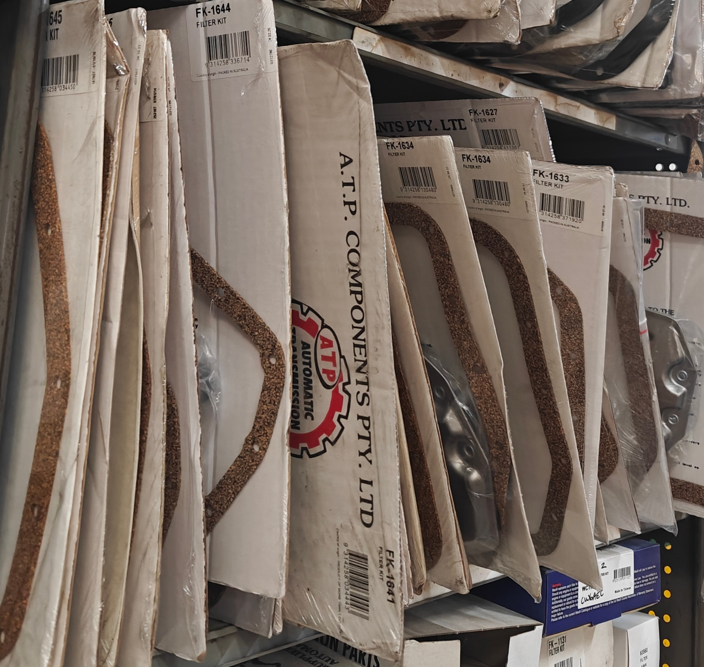
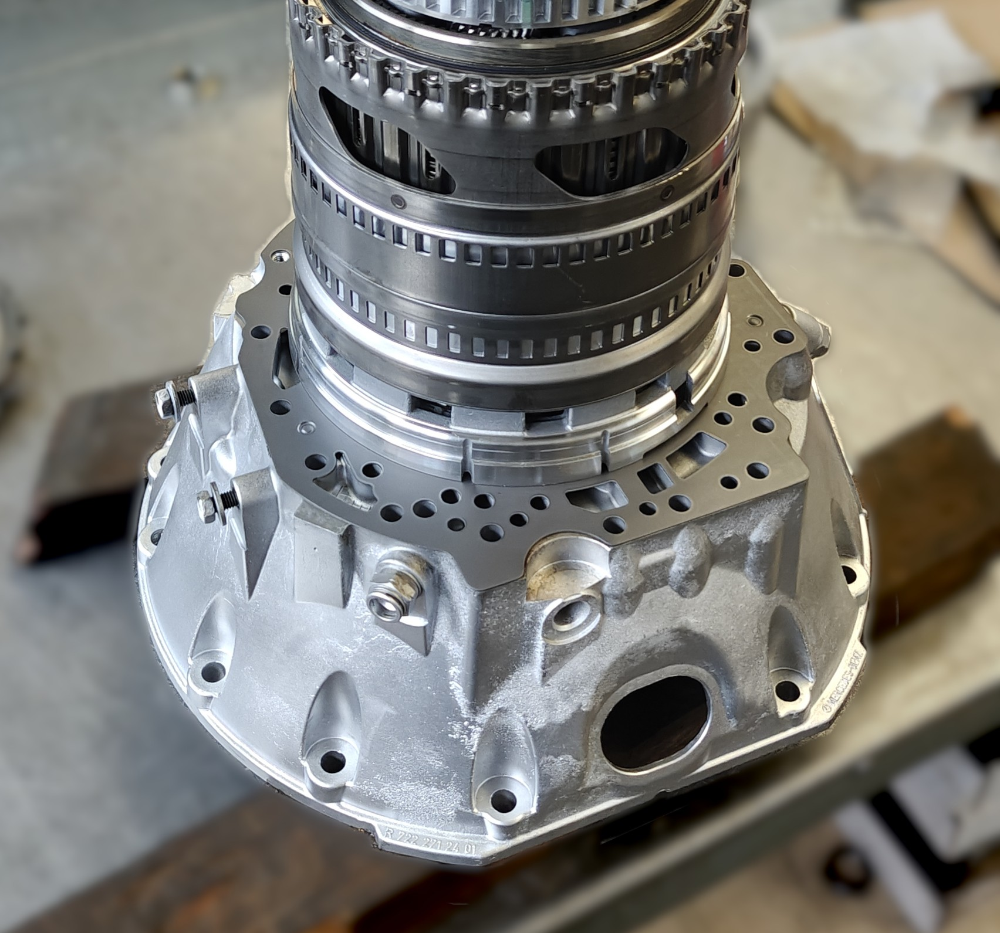
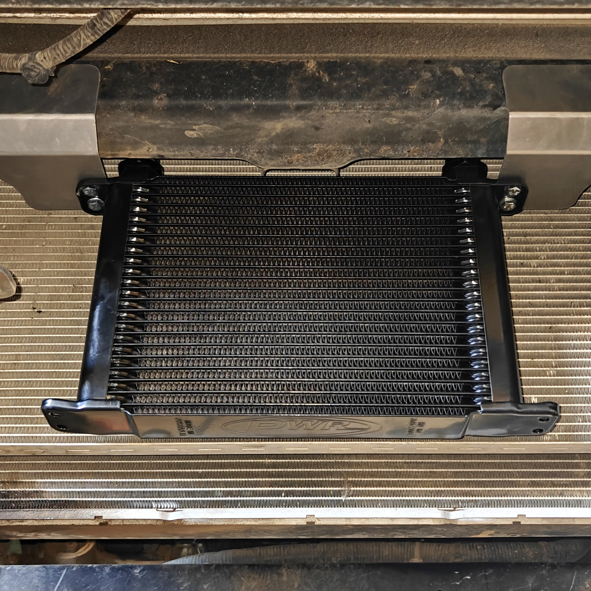
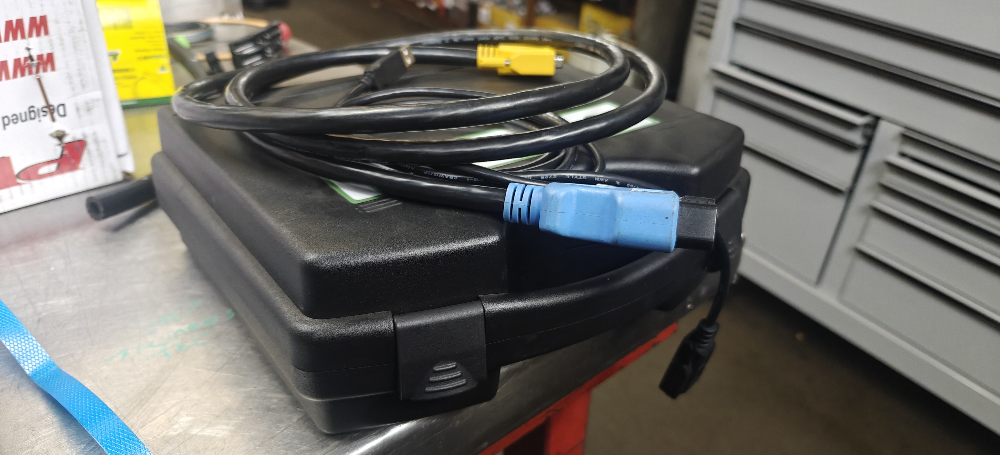
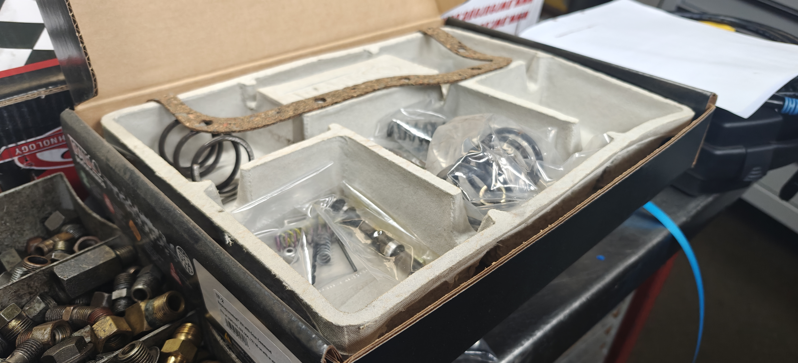

Our Services
Transmission servicing, repairs and upgrades
Repair and Service Information
Most people do not realise that automatic transmissions must be regularly serviced just like your engine. Due to misleading statements by most vehicle manufacturers, transmissions are NOT filled for life and their service intervals are FIRMLY between 20,000kms to 40,000kms.
Over time, transmission fluid breaks down due to heat and age. Once the transmission oil becomes old, overworked or contaminated with metal filings or clutch material, it will start to affect the temperature and performance of your transmission. Oil in this condition can not sufficiently clamp the clutch packs or lubricate the thousands of moving parts inside your transmission.
Additionally, most modern transmissions use a fabric filter element, it is extremely important to have this replaced at a regular interval. The material can get hot, stiff and contaminated, restricting the amount of oil that can be pumped around inside your transmission. As such, overheating and even slipping can occur when a filter has exceeded its working kilometres.

Transmission Servicing
A basic transmission service includes the following.
- A comprehensive transmisssion condition check including a test drive, code scan and visual inspection.
- Inspection and check of solenoids and band adjustments where applicable.
- A transmission filter change where applicable.
- Fresh automatic transmission fluid that is approved for your vehicle and transmission.
This is NOT a flush, we do not recommend flushing any electronically controlled transmissions.
Why we recommend servicing
Servicing your transmission at regular intervals is the most impactful thing you can do to keep your transmission performing at its best and increasing its longevity. We recommend changing the oil and more importantly the transmission filter every 20,000 to 40,000 kilometres depending on the vechile application and use.
Most dealership services and general mechanics do not service transmissions and they often go neglected. No matter if it is has been 20,000 or 100,000 since your last service, reach out today and get your transmission cleaned out and running right.

Transmission Rebuilds
If your transmission has failed and needs to be removed, we offer a complete strip down and rebuild service. This is a complete overhaul including clutch plates, seals, filters, torque converter, bushes, valve body reconditioning and more. Most transmissions have aftermarket solutions to fix common problems and correct factory defects. We always use and install these where applicable, so you know your transmission is going to leave our workshop better and stronger than a factory replacement unit. If your transmission is showing signs of wear including; slipping, clunking, missing gears, grinding noises or shaking and shuddering, give us a call about your options.
Rebuild vs second hand
Wether your car is a classic that you are not ready to part with or your daily driver that needs to be back on the road we always reccomend a rebuild over a second hand unit. You get the peace of mind of a thorough warranty, upgrade and updates to ensure your transmission stands the test of time with no fear of manufacturer issues arising again.

Transmission Coolers
Coolers are a very popular upgrade not just for four-wheel drives but also for passenger vehicles. They lower and control the temperature of your transmission oil, which is something most vehicles can benefit from. Aside from cooling vehicles that work hard or tow heavy loads, coolers separate the cooling system from the radiator. This means the coolant cooling your engine has a massive load taken off of it, plus eliminates the risk of coolant ever contaminating your transmission oil.
Why colder is better
Vehicle manufacturers purposely heat transmission oil to an extremely high temperature so keep the oil as thin as possible to meet ever increasing emission standards. Running your transmission oil cooler means it stays viscous and has the ability to properly lubricate the internals of your transmission and extends the time it takes for the heat to start breaking down the oil.

Transmission Tuning
Modern transmissions are precisely controlled by complex computer module systems. Manufacturers always tune transmissions with emissions in mind. As such, the factory set up is quite reserved. Adjusting these values can result in a transmission that changes gears quicker, firmer and has lower overall temperatures, just like an old school valve body shift kit.
Tuning will not fix transmission issues and is only available for select vehicles.
What we change
A major fault with a lot of modern transmissions is how hard they work the torque converter clutch. They often wear out and can shudder, slip or even stop working all together. A simple change to the apply rate and duty cycle can prevent these issues ever arising with no impact on fuel economy or drivability. Aside from torque converter adjustments, we can also correct other factory issues that have been found in OEM tune files, like low clutch pressures at high speeds, skip shift removal, soft mushy gear changes, low pump pressure and more!

Other services
- Transmission Removal and Replacment
- Shift Kits
- DCT and DSG Clutch Replacement
- CVT Rebuilds and Repairs
- Diagnostics and Test Drives
- External Leak Repairs
- Torque Converter Repairs
Call us for advice on any of these services!
Need Advice About Your Transmission?
Get in touch with our team to discuss your vehicle and requirements.
Contact Us